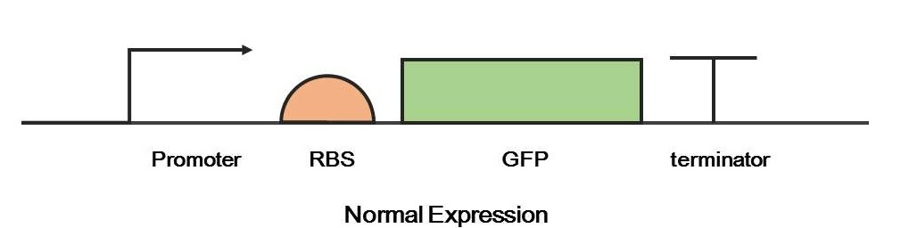
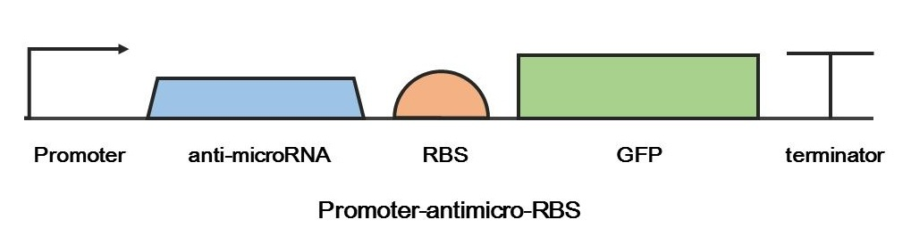
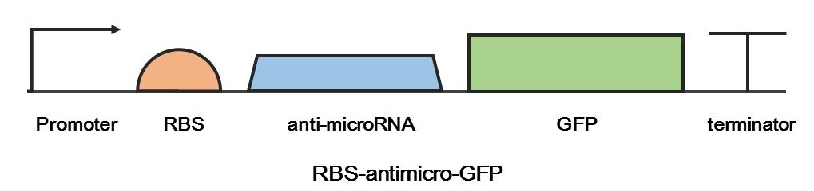
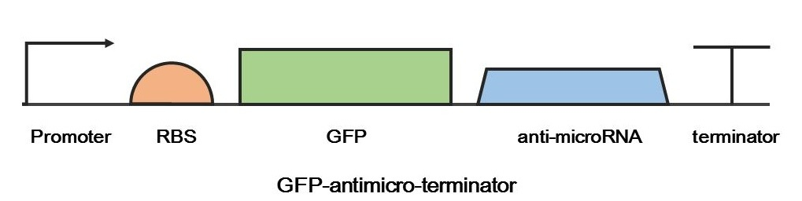
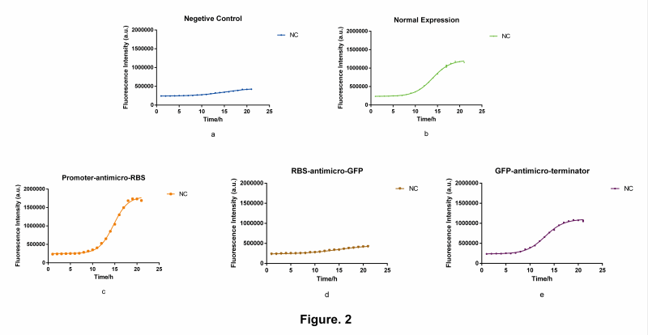
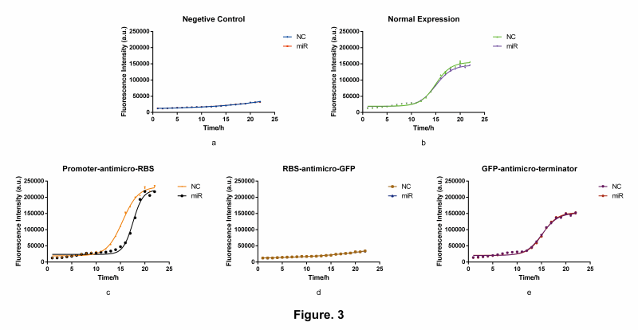

We believe that if we let microRNA served as an ‘input signal’, then there must be a sensor that can receive it. It appears to be the anti-microRNA segment. Moreover, combining GFP and anti-microRNA would be the simplest sensor we can make. We hope that insertion of the anti-microRNA segment in to the expression cassettes of GFP would complete the coupling we mentioned above. But the question is, the impact of the insertion on the original GFP’s expression is still remaining uncertain. Therefore, we independently transformed the test group plasmids and measured florescence data
    Informed by our instructor, mostly, experiments of microRNA in eukaryotic organisms, the anti-microRNA would be inserted in to 5’-UTR of the ORF. However, need to mention, for prokaryotic cells, we know that the missing of nuclear membrane brings the contemporary translation and transcription. Therefore, following hypothesis would make sense: if we insert anti-microRNA segment in to 5’-UTR with a prokaryotic test subject, there is a great possibility that the RNA interaction won’t happened before the protein translation complete, which means the insert position is meaningless. Therefore, combining Illustration 1 and 2, two result are expected in this experiment. First, the insertion of anti-microRNA should not have impact to the normal expression of GFP and, secondly, the insertion of anti-microRNA will correspond to the microRNA as we expected and have impact on the GFP’s final expression rate.
To determine the perfect inset position of anti-microRNA, we selected three different positions of GFP’s epression cassette. Then we transformed the three test groups and measured florescence data, respectively
Zero influence on normal expression of GFP and possible interaction between the system we created and microRNA when it enters the cell are all essential elements to determine whether our system could successfully work and function. Therefore, the concentration of microRNA would only be measured if the two elements we mentioned above are established. In our device, either 1.0 or 2.0, the expression rate of the encoding protein will decreased due to the shift of microRNA. That is, for device 1.0, a decrease in florescence intensity is observed after the transformation of microRNA. And, for device 2.0, an increase in florescence intensity is observed after the transformation of microRNA, since the encoding proteins in device 2.0 are repressor, such as TetR, CI, LacI.
To answer the question of the effectiveness of microRNA in prokaryotic cells, we transformed normal E. coil which individually contains plasmid (device 1.0 or 2.0) to the competent statue. Afterwards, we transformed microRNA in to the E. coil by heat shock method and measured florescence data
To prove the most vital functional concept of our system, we have done:
1、 Constructed three devices with three different anti-microRNA insertion position;
2、 Done transformation of each device and the test of initial statue, respectively;
3、 Transformed microRNA in to device selected by step 2, tested the response function.
Through steps above, selection is acceptable to be applied to the further test and construction.
Finally, data shows that Promoter-antimicro-RBS and GFP-antimicro-terminator would produce normal florescence light when there is no RNA interaction, which implies that the insertion in these two points would have zero influence on normal expression of GFP. (Figure 2c, 2e). Furthermore, when the microRNA has been transformed in to the device, florescence intensity has dramatically changed in Promoter-antimicro-RBS. This illustrated that only Promoter-antimicro-RBS would be able to maintain functionality in prokaryotic cells (figure 3c), meanwhile we acquired ideal device that could be applied to further experiments.